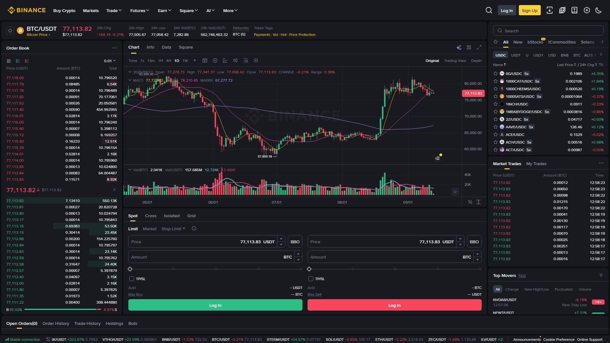

بائننس کا چارٹ پروفیشنل TradingView پر مبنی ہے — یہ دنیا کے طاقتور ترین ٹریڈنگ چارٹس میں سے ایک ہے۔ یہ باب آپ کو چارٹ کا ہر ٹول، ہر بٹن اور ہر عنصر سمجھاتا ہے۔ یہ باب آپ کے لیے اس لیے اہم ہے کیونکہ چارٹ پڑھنا = کرپٹو کی زبان سمجھنا ہے۔

Trade ▾ → Spot (یا Futures) → ٹریڈنگ جوڑا منتخب کریں (مثلاً BTC/USDT)┌────────────────────────────────────────────────────────────┐
│ [🔍 Search] [⏱ Timeframe] [📊 Indicators] [🎨 Layout] [⚙️] │
├──────────────┬────────────────────────────┬────────────────┤
│ │ │ │
│ Order Book │ │ Trade History │
│ (آرڈر بک) │ 📈 CANDLE CHART │ (ٹریڈ ٹیپ) │
│ │ (کینڈل چارٹ) │ │
│ Bids/Asks │ │ Buy/Sell rows │
│ │ │ │
├──────────────┼────────────────────────────┼────────────────┤
│ Price Info │ 📉 Volume / RSI │ Open Orders │
├──────────────┴────────────────────────────┴────────────────┤
│ [ Buy / Long ] [ Sell / Short ] │
│ Market | Limit | Stop-Limit | OCO | Trailing Stop │
└──────────────────────────────────────────────────────────────┘💡 تین اہم علاقے: بائیں = آرڈر بک (مارکیٹ کی طلب/رسد)، درمیان = چارٹ (قیمت کی کہانی)، دائیں = ٹریڈ ٹیپ (تازہ ترین لین دین)۔
محدود جگہ، بڑے بٹن، کم انڈیکیٹرز — نئے سیکھنے والوں کے لیے بہترین۔
مکمل TradingView چارٹ، لاتعداد انڈیکیٹرز، ڈرائنگ ٹولز، اور کثیر التقسیم (Multi-Pane) چارٹس۔
| پہلو | Classic | Advanced |
|---|---|---|
| انڈیکیٹرز | محدود | سو سے زیادہ |
| ڈرائنگ ٹولز | بنیادی | مکمل |
| وقت کے فریم | محدود | 1s سے 1M تک |
| ٹیمپلیٹس | نہیں | محفوظ کر سکتے ہیں |
| کس کے لیے | مبتدی | تجربہ کار |
چارٹ کے اوپری حصے میں Layout/Chart Mode ٹوگل → Classic یا Advanced منتخب کریں💡 مشورہ: ایک ہفتہ Classic پر گزاریں، پھر آہستہ آہستہ Advanced کی طرف بڑھیں۔
کینڈل (Candle) چارٹ کی بنیادی اکائی ہے۔ ہر کینڈل بتاتی ہے کہ اس دورانیے میں قیمت کہاں سے شروع ہوئی، کہاں تک گئی، اور کہاں ختم ہوئی۔
╷ ← High (سب سے اوپر)
│
┌────┴────┐ ← Close (اختتام — سبز میں اوپر)
│ │
│ Body │ ← جسم (Open سے Close تک)
│ │
└────┬────┘ ← Open (آغاز — سبز میں نیچے)
│
╵ ← Low (سب سے نیچے)| رنگ | مطلب | کیا ہوا |
|---|---|---|
| 🟢 سبز (Bullish) | Close > Open | قیمت اوپر گئی |
| 🔴 سرخ (Bearish) | Close < Open | قیمت نیچے گئی |
1H کینڈل (ایک گھنٹے کی کہانی):
Open: $96,000 (گھنٹے کا آغاز)
High: $96,800 (سب سے زیادہ قیمت)
Low: $95,400 (سب سے کم قیمت)
Close: $96,500 (گھنٹے کا اختتام)
→ سبز کینڈل (Close > Open)
→ اس گھنٹے میں خریدار جیتے💡 پروفیشنل راز: کینڈل کا جسم (Body) بتاتا ہے کہ خریدار/بیچنے والا کتنا مضبوط تھا۔ لمبا جسم = مضبوط حرکت؛ چھوٹا جسم = کمزور/متزلزل۔
ہر کینڈل (Candle) کا دورانیہ — یعنی ایک کینڈل میں کتنا عرصہ سمویا گیا ہے۔
| ٹائم فریم | نام | کس کے لیے |
|---|---|---|
| 1m | ایک منٹ | اسکیلپنگ (بہت شور) |
| 5m | پانچ منٹ | ڈے ٹریڈنگ |
| 15m | پندرہ منٹ | ڈے ٹریڈنگ |
| 1H | ایک گھنٹہ | سوئنگ ٹریڈنگ |
| 4H | چار گھنٹے | سوئنگ ٹریڈنگ |
| 1D | روزانہ | سوئنگ / پوزیشن |
| 1W | ہفتہ وار | طویل مدت سرمایہ کاری |
| 1M | ماہانہ | طویل مدت سرمایہ کاری |
| آپ کا انداز | تجویز شدہ ٹائم فریم |
|---|---|
| اسکیلپنگ | 1m / 5m |
| ڈے ٹریڈنگ | 5m / 15m / 1H |
| سوئنگ ٹریڈنگ | 4H / 1D |
| طویل مدت | 1D / 1W / 1M |
⚠️ یہ سب سے اہم تکنیک ہے جو نئے تاجر نہیں استعمال کرتے۔
پہلا قدم: بڑا ٹائم فریم (1D) → رجحان (Trend) دیکھیں
└── مارکیٹ اوپر ہے یا نیچے؟
دوسرا قدم: درمیان (4H/1H) → ساخت (Structure) دیکھیں
└── سپورٹ/ریزیسٹنس کہاں ہے؟
تیسرا قدم: چھوٹا (15m/5m) → داخلے کا وقت
└── بڑے رجحان کے ساتھ داخل ہوںمثال:
1D چارٹ: قیمت اپر ٹرینڈ میں ہے (MA 200 سے اوپر) → صرف Buy سوچیں
4H چارٹ: قیمت سپورٹ کے قریب آ رہی ہے → تیار ہوں
15m چارٹ: سبز کینڈل کی تصدیق → ✅ Buy💡 فائدہ: بڑے ٹائم فریم کے خلاف ٹریڈ نہ کریں۔ جو 1D پر اوپر ہے، اس پر 15m میں Sell کرنا = پچھلے رجحان کے خلاف تیرنا۔
انڈیکیٹرز ایسے حسابی ٹولز ہیں جو قیمت اور حجم کے ڈیٹا پر بن کر رجحان، رفتار اور سطحیں واضح کرتے ہیں۔ یہ پیش گوئی نہیں کرتے — صرف امکان کا اشارہ دیتے ہیں۔
| انڈیکیٹر | کیا بتاتا ہے | پروفیشنل استعمال |
|---|---|---|
| MA / EMA | رجحان کی سمت (اوسط قیمت) | ✅ ہمیشہ |
| RSI | خرید/فروخت کی رفتار (0-100) | ✅ زیادہ خرید/فروخت |
| MACD | رجحان کی تبدیلی کا اشارہ | ✅ تصدیق کے لیے |
| Bollinger Bands | اتار چڑھاؤ (Volatility) کی حد | ✅ بریک آؤٹ |
| Fibonacci | ممکنہ پل بیک سطحیں | ✅ سپورٹ/ریزیسٹنس |
| Volume | ٹریڈنگ کا حجم | ✅ بہت اہم |
| VWAP | حجم کے حساب سے اوسط قیمت | ✅ ڈے ٹریڈنگ |
چارٹ پر → [Indicators] 📊 → نام تلاش کریں → Add to chartMA 20 = مختصر مدت کا رجحان (تیز)
MA 50 = درمیانی مدت
MA 200 = طویل مدت (سب سے اہم)
قیمت MA 200 سے اوپر = ممکنہ اَپ ٹرینڈ (Bullish)
قیمت MA 200 سے نیچے = ممکنہ ڈاؤن ٹرینڈ (Bearish)
MA 20 > MA 50 > MA 200 = مضبوط اپ ٹرینڈ ✅RSI 70 سے اوپر = زیادہ خریدا گیا (Overbought) → ممکنہ گراوٹ
RSI 30 سے نیچے = زیادہ بیچا گیا (Oversold) → ممکنہ اچھال
RSI 50 کے قریب = غیر جانبدار⚠️ زیادہ انڈیکیٹرز = زیادہ الجھن۔ پروفیشنل تاجر عموماً 2 سے 4 انڈیکیٹرز استعمال کرتے ہیں۔ Volume ہمیشہ شامل رکھیں۔
چارٹ پر لکیروں، خانوں اور سطحوں کے ذریعے اپنے تجزیے کو واضح کریں۔
| ٹول | مقصد |
|---|---|
| Trend Line | رجحان کی لکیر کھینچنا |
| Horizontal Line | سپورٹ/ریزیسٹنس کی افقی سطح |
| Fibonacci Retracement | پل بیک کی ممکنہ سطحیں |
| Rectangle | رینج یا سپلائی/ڈیمانڈ زون |
| Parallel Channel | قیمت کا چلنے کا راستہ |
| Long/Short Position Tool | TP اور SL کے ساتھ منصوبہ |
💡 سپورٹ اور ریزیسٹنس کی طاقت: جتنی بار قیمت کسی سطح سے ٹکرا کر واپس آئی، اتنی ہی وہ مضبوط ہے۔ پروفیشنل یہ سطحیں ہمیشہ نشان زد کرتے ہیں۔
آرڈر بک وہ تمام آرڈرز دکھاتی ہے جو ابھی مکمل نہیں ہوئے — یعنی خریداروں کی بولی (Bids) اور بیچنے والوں کی پیشکش (Asks)۔
Price (USDT) Size (BTC) Total
سرخ → 96,120.50 2.500 2.500
سرخ → 96,118.00 1.200 3.700
سرخ → 96,115.00 5.000 8.700 ← Asks (فروخت)
───────────────────────────────────
96,112.40 ← Last Price (آخری قیمت)
───────────────────────────────────
سبز → 96,110.00 3.000 3.000
سبز → 96,108.50 1.800 4.800
سبز → 96,106.00 4.200 9.000 ← Bids (خرید)💡 دیواروں کا راز: جب کسی قیمت پر بہت بڑا Buy والا آرڈر ہو، تو وہ مضبوط سپورٹ لگتا ہے — کیونکہ قیمت گرنے پر وہ خرید لے گا۔ اور الٹا۔
وہ تمام ٹریڈز جو ابھی ہوئی ہیں — وقت، قیمت، مقدار اور طرف (Side) کے ساتھ۔
Time Price Amount Side
─────────────────────────────────────
14:30:21 96,112 0.500 BUY 🟢
14:30:20 96,110 1.200 SELL 🔴
14:30:19 96,110 0.300 BUY 🟢💡 ٹیپ سے رفتار کا اندازہ: اگر ٹیپ پر ٹریڈز بہت تیز آرہے ہوں، تو مارکیٹ میں بھیڑ ہے — اکثر کوئی بڑی خبر یا حرکت ہو رہی ہے۔ اگر ٹیپ خاموش ہو، تو مارکیٹ سو رہی ہے۔
آرڈر بک کی تصویری شکل — ایک نظر میں دیکھ سکتے ہیں کہ خریدار زیادہ ہیں یا بیچنے والے، اور کس قیمت پر گاڑھی (Liquidity) موجود ہے۔
│ ▲ Asks (سرخ)
│ ╱
│ ╱
──────┼────── Mid Price
│ ╲
│ ╲
│ ▼ Bids (سبز)💡 کیوں اہم ہے: اگر آپ بڑا مارکیٹ آرڈر دیں اور ڈیپتھ کم ہے، تو آپ کو خراب قیمت ملے گی (Slippage)۔ ڈیپتھ زیادہ = بہتر قیمت۔
یہ وہ جگہ ہے جہاں سے آپ خرید/فروخت کا حکم دیتے ہیں۔
[Price] 96,112.00 USDT (مارکیٹ قیمت پہلے سے)
[Amount] 0.0100 BTC (یا Total میں رقم لکھیں)
[Total] 961.12 USDT
[ 25% ] [ 50% ] [ 75% ] [ 100% ] ← بالکل بٹن
[ Buy BTC 🟢 ] [ Sell BTC 🔴 ]| آرڈر | کیا کرتا ہے | کب استعمال |
|---|---|---|
| Market | فوری موجودہ قیمت پر | جلدی داخلہ/خروج |
| Limit | مقرر قیمت پر | درست قیمت چاہتے ہیں |
| Stop-Limit | قیمت کی سطح پر فعال، پھر Limit | رسک کنٹرول |
| Stop-Market | قیمت کی سطح پر فعال، فوری مارکیٹ | فوری حفاظتی خروج |
| OCO | ایک وقت میں TP + SL | بہترین ٹریڈ مینجمنٹ |
| Trailing Stop | قیمت کے ساتھ خودکار ایڈجسٹ SL | منافع محفوظ کرنا |
💡 فیصد بٹن: پینل میں 25%، 50%، 75%، 100% بٹن آپ کے Spot بیلنس کے تناسب سے آرڈر لگاتے ہیں — اس سے حساب کی غلطی نہیں ہوتی۔
چارٹ ایک زبان ہے۔ کینڈلز اس کے حروف ہیں، ٹائم فریمز جملے، انڈیکیٹرز قواعدِ گرائمر، اور آپ کا تجزیہ ایک کہانی۔ جب تک اس زبان پر عبور نہ ہو، چارٹ آپ کو گم کر دے گا۔
صبر سے سیکھیں، چھوٹے ٹائم فریم سے بڑے کی طرف بڑھیں، اور کم ٹولز کو اچھی طرح سمجھیں — بہت سے ٹولز سے بہتر ہے۔ اور یاد رکھیں: کوئی بھی انڈیکیٹر آئندہ کی ضمانت نہیں دیتا — وہ صرف معلومات دیتے ہیں۔ فیصلہ آپ کا ہے۔